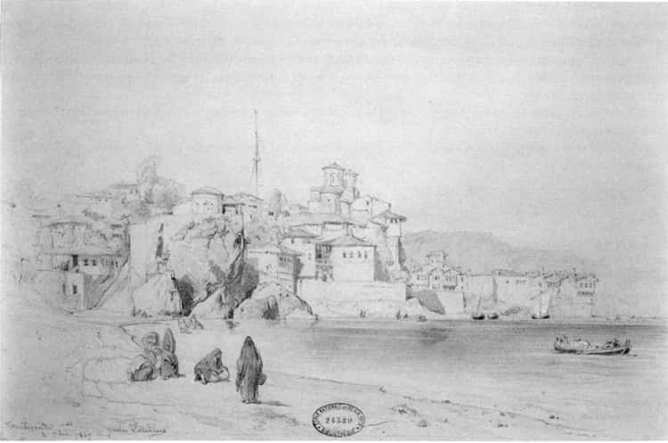

Muhterem hocamız Prof. Münir Aktepe, yazdığı “Tuzcuoğulları İsyanı” adlı makalesiyle Trabzon tarihine kayda değer bir katkıda bulunmuştur.[218] O dönemin Trabzon’u, iktisadî ve idarî veçhesiyle şüphesiz bir değişim içindeydi. Ben bu mütevazı çalışmada 19. yüzyılın ortalarında bu bölgenin ve vilâyet merkezi olan beldenin bünyesi üzerinde durup bir kaba tasvir yapmak niyetindeyim. Bunun için başlıca malzeme Britanya ve Alman devletlerinin konsolosluk raporları olacak; onları yerli kaynaklarla (sâlnâme gibi) karşılaştırarak bazı veriler elde etmek durumundayım.
Elimizdeki Alman konsolosluk raporları Alman Birliği’nin kurulmasından sonra ve Birinci Büyük Savaş’a kadarki dönemi, yani 19. yüzyıl sonu ve 20. yüzyıl başını kapsar. Britanya raporları daha eskiye uzanır ve esasen teferruatlıdır. Ancak, iki kaynağa ait belgeler ayrı ayrı değerlendirilmelidir. Özellikle Birinci Dünya Savaşı öncesi durum için Alman konsolosluk raporlarının kısa bir değerlendirmesi yapıldı (bkz. Ek 1). Bunların, şehrin beynelmilel ticareti, fakat sanayiden uzak tüketim kalıplarını anlamak bakımından yararı vardır. Burada bir de Trabzon vilâyeti dahilinde olmasına ve Trabzon’la birlikte bir iktisadî yapı içinde bulunmasına rağmen Giresun’u ayrıca ele aldık.
Trabzon’un Tanzimat sonrası yıllarda, özellikle Kırım Harbi sırasında, bu harbin etkisiyle önemli bir ticarî patlama yaşadığını göreceğiz. Ancak Tuzcuoğulları zamanında da bir ticarî trafik olan bu bölgede, içtimaî ve iktisadî gelişmeyi sadece ticarî verilerle anlamak mümkün olmuyor.
Genellikle Tanzimat dönemi reformları, ulaşım ve haberleşmeyi kolaylaştıran ve asayişin kısmen düzelmesini sağlayan neticeler ve bürokrasinin teşvik edici ve düzenleyici tedbirleriyle ticareti artırdı. Bu hal vilâyetlerin bir kısmında, hayatın değişmesine sebep olmuş, değişen tüketim zevki ve hayat tarzı da hiç değilse memur zümresi ve yerel eşrafın yeni tüketim malları kullanımına ve bu merakın yayılmasına ve ticaretin hacminin artmasına neden olmuştur. Bundan başka, Trabzon vilâyetine dahil bir sancak olan Giresun’un da ayrı olarak incelenmesi, bize Osmanlı döneminin bu geniş vilâyeti hakkında daha tamamlayıcı ve geniş bir görüş kazandırabilecektir.
19. yüzyılın ortalarında Trabzon, telgraf hattı vasıtasıyla başkentle haberleşme ağı içine girdi. Tanzimat sonrasında bürokrasinin yeniden düzenlenmesi, asayişin eskiye oranla sağlanması ve ulaşım imkânları ticarî kapasiteyi artırmıştır. Trabzon vilâyeti limanları da, bu dönemde özellikle Kırım Savaşı’nın yarattığı imkânlarla ticarî faaliyetlerini artırmışlardır. Nitekim Trabzon’daki Britanya konsolos vekili Stevens’ın 1854 yılı raporu bu tezatlı gelişmeyi naklediyor. Harb edilen memleket Rusya ile ticaret devam etmektedir. Stevens 1854 yılında ticaret hacminin bir evvelki 1853’e göre 1.742.693 sterlinden 2.023.673 sterline yükseldiğini bildiriyor.[219] Harb yıllarında Rusya ile kaçak ticaret, Kafkasya’dan (burada da bir cephe vardı) ve İran üzerinden yapılıyordu. Demir, kenevir, gemi halatı, balmumu, tuzlu balık, buğday, şimşir ağacı bu tarafa geçirilmekte, buna karşılık şeker, kahve, kalay, cam eşya hatta barut gibi maddeler de öbür tarafa nakledilmekteydi (barutun Rusya’dan çok Kafkas kabilelerinin ihtiyacı için ihraç edildiği düşünülmelidir). Bu sonuncu grup mal dolayısıyla İngiltere’den ithalat artmıştır. Köylüler durumdan istifade etmekte ve hatta işçi ücretleri bile artmaktadır. Sulh zamanında 1,6 sterlin olan işçi ücreti (bu haftalık olarak düşünülmeli) 3 sterline kadar çıkmıştır. 1856 yılında ise, Stevens artışın devam ettiğini rapor ediyor. İran üzerinden Kafkasya’ya geçen mallar (İngiliz malları) 53.047 sterlin artış göstermiş (1854’e göre). Kırım’daki müttefik orduların ihtiyacını karşılamak faaliyeti bu limanların önemini artırmış.[220]
Nitekim, 1860 yılı ilk yarısında limana gelen gemiler ve hamuleleri şöyledir:[221]
| sayı | hamulesi | |
| Britanya | 1 | 384 |
| (Buharlı+yelkenli) Avusturya | 30 | 21.047 |
| (Buharlı+yelkenli) Fransız | 26 | 10.410 |
| (Buharlı) Türk | 20 | 15.085 |
| (Yelkenli) Türk | 23 | |
| Rus Buharlı | 17 | 17.274 |
| Yelkenli | 8 | |
| Yunan Yelkenli | 8 | 2.030 |
| Sardinya Yelkenli | 3 | 1.050 |
| Toscana Yelkenli | 2 | 522 |
| Mecklenburg Yelkenli | 1 | 231 |
Nüfus
Sâlnâmeler ve konsolosluk raporları mutabakat halindedir. 1860 için İngiliz raporlarının verdiği nüfus, Osmanlı sayımına dayanır.
Nitekim, bu rakamların “nüfus ağası”nın yaptığı sayımdan elde edildiği belirtiliyor.
| Müslüman | Rum | Ermeni | Ermen Katolik | Ermeni Protestan | |
| Trabzon (Merkez) | 146.000 | 19.660 | 4.750 | 100 | 44 |
| Ordu | 39.500 | 8.680 | 3.000 | --- | --- |
| Gümüşhane | 25.400 | 15.750 | 1.280 | --- | --- |
| Lazistan sancağı | 66.150 | --- | 400 | 1.230 | --- |
| Toplam | 277.050 | 44.090 | 9.430 | 1330 | 44 |
Toplam nüfus: 331.944
Trabzon şehri nüfusu ise:
| Müslüman | 40.000 |
| Rum | 10.000 |
| Avrupa tebaası | 1.500 |
| Ermeni | 3.000 |
| İranlı | 600 |
| Ermeni Katolik | 500 |
| Ermeni Protestan | 100 |
| Yekûn | 55.700 |
olarak verilmektedir.
Şehirde ilginç bir unsur İranlılardır ve bu İran transit ticaretiyle ilgili bir vakıadır. Sayıları asrın sonuna kadar artmış olmalı ki, İranlı unsur kendi kamusal kurumlarını da meydana getirmiştir. Nitekim 22 Şubat 1326/19 Eylül 1908 tarihine ait bir irade ile Trabzon’da bir İran mektebinin açılması için izin de verilmiştir.[222] Bu mektebin varlığını ve binanın yerini tesbit edemedik.

Trabzon, 3 Eylül 1847 (Jules Laurens).
1860 için Trabzon vilâyet taksimatı
Trabzon merkez sancağına; Yumru, Vakf-ı Kebir, Akçaabad, Tonya, Görele, Kastel, Maçka, Sürmene, Of, Rize kazaları bağlıdır. Ordu sancağının 7 kazası vardı ve Giresun bu sancağa bağlıydı. Asrın ikinci yarısında gelişecek ve bir sancak olacaktır. Bu makalede Giresun bu gelişmeden dolayı müstakil olarak ele alınacaktır. Karahisar 9 ve Lazistan sancağı 10 kaza ihtiva etmektedir. Lazistan sancağına Batum ve Acara bölgeleri de bağlıydı. Gümüşhane 6 kazaya sahiptir. Kaymakamlar Gümüşhane, Giresun, Karahisar ve Batum’da oturur. Diğer kaza bölgelerini bu dönemde (yani 1864 ve 1871 Vilâyet Nizamnâmeleri öncesi) müdürler yönetir.
1870’lerden itibaren Trabzon
Şehirde 1880’lerde Osmanlı Bankası’nın kredi mekanizmasının işlediği; Ermeni ve Rum ihracatçıların bundan istifade ettiği görülüyor. Bu arada, Kafkasya’dan göçlerle şehirde Laz, Tatar ve Çerkes denen grupların arttığı ve nüfusun katlandığı anlaşılıyor. 1892 için Britanya konsolosu Longworth’un verdiği nüfus miktarı sâlnâmelerle de uyuşuyor;[223] 2911 yerleşmede 188.630 hane vardır. Müslümanlar 820.426, Rumlar 159.599, Ermeniler 44.350 ve ecnebiler 16.315 (yekûn 1.040.690’dır). Demek ki, 1860’a göre, otuz yıl içinde nüfusun büyümesi 3 kat kadardır. 1860’da 55.000 civarında verilen Trabzon şehir nüfusunun ise bu oranda artmadığı açık. Gerçi, 1890’daki kolera salgını, artık alınan hıfzıssıhha tedbirleri dolayısıyla büyük bir yıkım getirmemiş görünüyor. Bu artan nüfus ve zenginleşmenin bütün Trabzon’da kamusal binalara yatırımı da artırdığı, özel konutların da imparatorluğun nadir şehirlerinde görülen bir düzeye ulaştığı anlaşılıyor.
Dış ticaret
1879 ve 1880 itibariyle Trabzon’un ihracatı ve önemli kalemler şöyledir (£ olarak):[224]
| 1879 | 1880 | ||
| Bakliyat | 23.379 | 23.327 | |
| Şimşir ağacı | 1.161 | 51 | azalan kalem |
| Meyve-sebze | 26.952 | 10.146 | azalan kalem |
| Deri | 21.616 | 29.191 | artan kalem |
| Mısır unu | 46.225 | 7.075 | azalan kalem |
| Keten ürünleri | 15.720 | 10.220 | azalan kalem |
| Fındık-ceviz | 27.156 | 47.104 | artan kalem |
| Muhtelif makine | 99.136 | 66.956 | azalan kalem |
| Tiftik | 7.950 | 15.970 | artış önemli |
| Tütün | 49.272 | 57.993 | artan kalem |
| Ceviz ağacı | 29.956 | 11.983 | azalan kalem |
| Toplam ihracı: | 348.523 | 279.971 | 68.552 £’lik bir azalma vardır. |
Ancak fındık ve tiftik ihracatı artışının ve asıl önemlisi bölgede tütün rejisinin hâkimiyetini artıran tütün için aynı durum söz konusudur. Reji idaresi istihdam ettiği gayrimüslimlerle, yerli Müslüman ekiciyi karşı karşıya getiren bir mekanizma meydana getirmiştir. Britanya konsolosu Biliotti 1884 tarihli raporunda[225] (31 Aralık 1884 itibariyle); ithalat ve ihracat, gemi ve şirket acentalığı yapanların listesini veriyor (bkz. Ek II). Acentalar arasında Ballassarian, Dernarsessian, Hedeciyan, Marinian gibi Ermeniler; Triandofilis, Efremides gibi Rumlar; Konstantinof (Rus), Hochstrasser (Alman) ve Hacı Mirza Baba, Hacı Cevad gibi İranlılar var. İhracatçılar da gene aynı etnik gruplardan 33 kişidir. Aralarında Lemlioğlu, Salihoğlu, Hacı Ali Hafız dışında yerli Müslümanlara rastlanmıyor. İthalatçılar listesi daha kalabalıktır. 65 kişi arasında Hamamcızâde, Gundulzâde, Lemlioğlu biraderler, Serdarzâde Salih efendi, Yelkencizâde biraderler dışında yerlilere rastlanmıyor. Bunlar içinde ithalat ve ihracatta sadece tarım ürünlerine kapanmayan, dış dünya ile mamul ürün ithal ve ikame eden tek aile Lemlioğullarıdır. Bölgede ziraatın teknik makine ve yoğun metotlarla yapılmadığı, 1321/1903 tarihli sâlnâmede modern ziraî tekniklerin anlatılmasından ve bunların tatbik edilmediğinden acı acı dert yanılmasından bellidir (Sâlnâme-i Vilâyet-i Trabzon, sene 1321, s. 146 vd.).
Yabancı temsilcilikler
Şehirde canlı ticaret ve kozmopolit tüccar nüfus dolayısıyla bulunan konsolosluk heyetleri, 1318/1900 yılı itibariyle şöyledir:[226] Avusturya-Macaristan başkonsolosu (Alman ve Felemenk devleti Trabzon konsolosluğunu da yerine getirir). Samsun konsolos vekili ve Giresun konsolosluk memurları ona bağlıdır. İngiltere’nin Trabzon konsolosu (Longworth), ABD konsolosluğunu da ifa eder. Samsun’da konsolos memuru vardır. Trabzon’da, Fransa konsolosu ve Samsun’da da konsolos memuru vardır. Rusya’nın Trabzon’daki konsolosuna, Rize viskonsülü, Samsun viskonsülü ve Giresun viskonsülleri bağlıdır. İtalya’nın Trabzon konsolosuna, Samsun konsolosluk memuru bağlıdır. İsveç ve Norveç’in Samsun’daki konsolos vekâletini de Samsun’daki İtalyan memur yerine getirir. Giresun’da da bir konsolosluk memuru vardır. İran’ın Trabzon’da başşehbenderi (başkonsolos) ve Samsun’da konsolosu (şehbenderi) vardır. Yunanistan’ın da Trabzon’da konsolosu vardır. Belçika’nın Trabzon konsolosu, Danimarka konsolos yardımcılığı görevini de görür ve Samsun’da bir viskonsülü vardır. Gene İspanya’nın Trabzon’da konsolosluğu ve Amerika’nın da Samsun’da konsolos memurluğu vardır. Trabzon’da bu zamanda 6 dava vekili ve 11 diplomalı tabip vardı; gene buna yakın sayıda eczacı faaliyetteydi.
Şehirde gayrimüslimlerin hayatında da farklı sosyal sınıfların tüketimine ve servetine göre bir farklılaşma vardı. Stéphane Yerasimos, 19. yüzyılda dış ticaretle zenginleşen Rumların çocuklarını istediği gibi eğittiğini, dışarı gönderdiğini ama fakirlerin şehirdeki Rum-Ortodoks Patrikhanesi’nin kontrolünde dinî karakterli okulda Hellen lisanı ile eğitim gördüklerini belirtiyor. Trabzon’da Sevastos Kyminitis’in kurduğu okul 1682’den beri faaliyetteydi ve okulların sayıları zamanla arttı. Rumlar, Ermenilerin aksine Müslüman nüfusla da fazla bir ilişki içinde değillermiş.[227] Şüphesiz Orta Anadolu ve hatta Batı Anadolu’ya göre farklı bir atmosfer ve cemaatler arası farklı ilişkiler düzeni olduğu görülüyor.
Trabzon dış dünya ile ticaretin dışında, dış vilâyetlere ve dış ülkelere (Rusya ve diğer Karadeniz’e komşu ülkeler) emek ihraç eden bir vilâyetti. Bu nedenle bu bölgede farklı sosyal kurumlaşmalar ve kültürel etkiler de yer etmiştir. Öyle ki 19. yüzyılın ikinci yarısında (Birinci Dünya Savaşı’na kadar) Trabzon vilâyeti 20. yüzyılın ilk yarısından daha farklı bir ilişkiler kompozisyonuna sahipti, Birinci Dünya Savaşı’ndan sonra, Rusya ticaretinin kapanması ve İran transit ticaretinin kısmen başka yönlere kayması, bölgeyi dış dünyadan soyutlamıştır. Dışa açılış son devrin değişen şartları dolayısıyla henüz başlıyor. Bu özelliği bölgede Giresun limanı ve artbölgesi için gözlemek de mümkündür.
19. Yüzyılda Giresun Kasabası
19. yüzyılda Giresun, Trabzon merkez sancağına bağlı kazalardan biriydi. Güneyde Şebin-Karahisar, bugünkünün aksine, bu kazaya bağlı değildi. Ancak Giresun, Anadolu ve Karadeniz coğrafyasında iktisadî bakımdan bugünkünden daha önemli bir konumda görünmektedir. 1895 yılına ait Trabzon Vilâyeti Sâlnâmesi (Sâlnâme-i Vilâyet-i Trabzon, sene 1313) Giresun’u şöyle anlatmaktadır:[228]
Trabzon’un canib-i garbîsinde berren otuzaltı saat mesafede vâki olan Giresun kasabası ki merkez-i kazadır; Trabzon ve Samsun kasabalarından sonra ticaret ve mamuriyetçe; dahil-i vilâyetde bulunan kasabaların heman cümlesine fâik olup, hele letâfet-i âb-ı havaca burası salihen sefabahş-ı kulub olacak bir mevkî-i dilâradır: Kaza-i mezkûr Akköy (bugün Bulancak), Piraziz, Keşab, Kırık namlarında dört nahiyeyi havî ve ma’e mülhakat 11.973 haneyi camîdir.
Giresun ahâlîsi ezmene-i salîfede olduğu gibi şimdiki halde dahi heman umûmen ticarete maîl ve münhemik olduğundan orası ehemmiyetli bir bendergâh-ı ticaret olmak mevkiîni ihraz etmiştir. Giresun kasabası Karadeniz sevahilinin en güzel ve en mâmur şehirlerindendir. Giresun’da tıbkı Samsun gibi bir hayat-ı ticarî ve iktisadî tecelli eder.
Giresun’dan Karahisar’a uzanan ve 19. yüzyıl boyu teknik bakımdan büyük problemler yarattığı halde, ulaşımı sağlayabilen yol sayesinde, bu iskele şehri hayat bulmaktadır ve sâlnâmede de belirtildiği üzere haftada 5-6 vapur Giresun’a uğramaktadır.[229]
1868-69 yılı itibariyle Trabzon’da Britanya konsolosu olan W. Gifford Palgrave, Giresun şehrinin nüfusunu Mart 1868 tarihli raporunda da şöyle vermektedir:[230]
4600 nüfus: 600’ü Rum, kazanın 60 köyünde 18.252 nüfus vardır; 14.427’si Müslüman, 2.631’i Ermeni, 145’i Rumdur. Gene kazanın içindeki ev ve binaların dökümü de şöyle verilmektedir:[231]
| 4816 1 124 137 62 16 53 1 1 1 1 3 4 24 5 746 313 195 73 12 142 5 3 24 |
hane mekteb-i rüşdiye mekteb-i ibtidaiyye mescit ve camî-i şerif medrese tekke kilise hükümet dairesi hapishane daire-i askeriye redif deposu fabrika eczahane han hamam dükkân mağaza su değirmeni ekmekçi fırını gazino kahvehane lokanta hotel meyhane |
1903/1321 yılı Trabzon Vilâyeti Sâlnâmesi’nde Giresun şehri ve onun kıdemli belediye reisi Kaptan Yorgi Paşa’dan sitayişle bahsedilmektedir.[232] Belediye reisi izzetli Kaptan Yorgi Paşa’nın 18 yıllık belediye riyaseti sırasında şehir çok gelişmiş, caddeler açılmış, kaldırım döşenmiş, bahçeler (parklar), çeşmeler yapılmıştır (Sâlnâme, s. 247). Yarımadanın ortada yükselen kısmına Akropolis deniyor, buraya ağaçlı bir cadde yapılmış ve hükümet konağı bahçesi de tanzim edilmiş. Gerçekten hükümet konağı bu devirde kaza merkezinde rastlananlardan daha abidevî ve mükellefti. Sâlnâme, “Hükümet dairesi iâne ile yapılmış olup, muazzam ve dilnişin bir binadır” diyor. Şehirde kaldırım döşenen ve tanzim edilen caddeler yüz bin metre murabba’ındadır.
Giresun halkı ekserisi fındık ziraatı ve ticaretiyle meşguldür. Marangoz, dülger, taşçı, demirci ve kayıkçı, balıkçı (nitekim Keşab balıkçılıkla geçinen bir nahiyeydi), bakırcı gibi zenaatkâr ve esnaf da vardır. Nitekim 1321/1903 yılı sâlnâmesi de Sürmene ve Ünye’de on beş, yirmi bin kilelik gemiler; Tirebolu ve Giresun’da da pek zarif sandal ve kayıklar yapıldığını bildiriyor (Sâlnâme, s. 118). Bakırcılık zenaatının ihtiyacı için Giresun’a İngiltere ve Rusya’dan bakır ithal edildiğini de görüyoruz:[233] “Ehl-i kur’a, yani köylüler para kazanmak için memâlik-i ecnebiyeye de giderler.” Demek ki, dışa işgücü göndermek, bütün Trabzon vilâyeti gibi Giresun’da da müzmin bir problemdir.
Ahalinin pek azı setre pantolon giyer. Halkın ekserisi ve köylüler çakşır ve zıbka ve mintan giyinir. Müslüman ve gayrimüslimler arasında büyük kıyafet farkı olmadığı, dönemin fotoğraflarından da anlaşılmaktadır. Genellikle yabancı sermaye ve tütün rejisi gibi kuruluşlar, yerli Rumlar ve Müslümanlar arasında istihdam ve serviste ayrılık gözettiğinden, bu hal bir gerilim yaratır. Osmanlı ülkelerinde Protestan misyonerler de yerli Hıristiyanları çok etkilemişlerdir. Hem ticarî faaliyet hem de çevredeki okul, kilise gibi kurumların etkileri Giresun’da da dinî-etnik gruplar arasında gerilimi artırmıştır. Bununla beraber, gerek idarî gerekse sosyal hayatta şehrin Rumları, nüfus miktarlarının çok üstünde bir mevkie sahiptiler. Belediye meclisleri ve çeşitli idarî komisyonlarda bunu görmek mümkündür. Konsolosluk temsilciliği gibi görevleri almaları, onların dış dünya ile ilişkilerinin daha yoğun olduğunu gösteriyordu.
Kazanın ahalisinin ekseriya Çepnî aşireti Türkmenlerinden olduğu bilinmektedir. Giresun eşrafının önde gelenleri, yani meclis-i idareler ve mal sandığı, ziraat komisyonu, mahkemeler gibi karma komisyonlarda çalışıp, madalya ve nişan ile ödüllendirilenlerin isimlerine baktığımızda; bunların ekseriya yeniçeri menşeli ailelerden gelir gibi görünümleri vardır. 1313/1895 sâlnâmesine göre, şehir eşrafının önde gelen isimleri şunlardır:[234]
Dizdarzâde Abdullah Bey
Sarıalemdarzâde Ahmed Efendi
Gedikalizâde Ahmed Ağa
Sarıalemdarzâde Hasan Tahsin Efendi
KapudanYorgi Efendi (belediye reisi), sonra paşa
Karaibrahimzâde Abdullah Efendi
Sarı Mahmudzâde Mustafa Efendi
Tokatlıyan Mateos Ağa
Muhacirinden Yusuf Ağa
Muhacirinden Aziz Ağa
Çolakkadızâdeler (ilmiyyeden, naîb, kadı kökenli)
Bu listeye Beyazıtoğullarını da (Beyazıtzâde) ilâve etmelidir. Bu aileden de birkaç fert yakın zamanlara kadar şehrin belediye reisliğinde bulunmuştur. Bahaeddin Yediyıldız, çevrede müsellem ve nöker oğlanı denen zümrenin kalabalığı ve arazi tasarrufundan söz etmiştir.[235] Nitekim, eşraf ailelerin isimleri de bunu gösteriyor. Bundan başka, Kırım Savaşı’ndan beri bölgeye göç eden Dağıstanlı, Çerkes ve Kırımlıların varlığı, bazılarının ticaret ve zenaatla yükselip muteberân arasına girdiği de görülüyor. 1318/1900 Sâlnâmesi’ne göre, şehirde Avusturya-Macaristan konsolos memuru (Papadopulos), Rusya viskonsülü (Kolaro), İtalya konsolos memuru (Petroçina), İran konsolos vekili gibi ecnebî devlet memurları da vardır.[236] Bunların bazıları, meselâ Tomaçino adlı biri Avrupa vapur kumpanyalarının temsilcisidir. Ticarî kayıtlara ulaşılamadı. Ama şehirde belirli sayıda İtalyan, Alman gibi Avrupalıların yaşadığı, ticaret, zenaat, serbest meslek icra ettiği biliniyor; bunların bugün çocuk kütüphanesi olan Roma Katolik mezhebine bağlı bir küçük kiliseleri de vardı. İşte bu grup, şehrin Rumlarına da Avrupaî bir tarz-ı hayat konusunda etki etmiş olmalı ki, gazino, lokanta gibi Akdeniz limanlarına has bazı sosyal kültürel birimler ortaya çıkmıştır. Ama genelde, şehirde kendine has mimarînin yanında, yeni bir taş işçiliği ve inşaat tarzı ile yeni binalar inşa edilmiştir. Bu binaları bugün eski albüm ve kartpostallardan görüyoruz. Karadeniz’in bu bölgesinde 19. yüzyılda eski tarz-ı mimarî ile yeni bir kârgir tekniğin bileşimi ortaya çıkmaktadır.
Giresun kazasının içinde, kaba bir sayımla yüz bin hektarı geçen bir ormanlık vardır. Ama ormancılığın bir sanayi haline gelemediği, yeterince kereste fabrikası olmadığı ifade edilmektedir. Aynı şey üzüm bağcılığı için de söylenmekte ve bu yüzden ıslâha muhtaç bu dalın şarapçılığın gelişimini sağlayamadığı ifade edilmektedir.[237]
Giresun’u Şebin-Karahisar’a bağlayan şose yol, hem merkez kaza hem de hinterland (artülke) için hayatî önemi haizdir. 19. yüzyılın sonunda bu yolun ıslâhı için Alman, Fransız imtiyaz avcıları rekabete girmiş, bu arada Sivas-Giresun-Karahisar-Erzurum ağının (2000 mil ediyor) inşası düşünülmüştür. Trabzon-Erzurum karayolu ıslâh edilerek Giresun’un iç tarafla bağlantısını kurmak üzere “Entreprise Générale des Routes de l’Empire Ottoman” adlı bir Fransız şirketi ıslâh ve yapım işini üstlenmiştir.[238] Etkili bir sonuç alınamamıştır, ama Giresun-Karahisar yolu üzerinde önemli bir onarım sağlanmıştır.
Giresun limanının (daha doğrusu iskelesinin) 19. yüzyılın ortalarından itibaren ticaret ve gemicilik alanındaki faaliyetleri konusunda, dönemin Britanya raporları önemli bilgi vermektedir. 1854’te Trabzon’daki Britanya viskonsülü Stevens’ın, savaşa (Kırım Savaşı) ve Kafkasya, Kars, Bayezid’de Rus ordularının varlığına rağmen, Trabzon ticaretinin durmadığını; tahminlerin aksine, 1.742.693 sterline fırladığını ve bu miktarın 1854 yılı itibariyle 2.023.073 sterline çıktığını belirttiğine değinmiştik. Hiç şüphesiz İran transit ticareti cephe gerisinden gene Trabzon limanına ulaşmaktadır. Bu ticarette Giresun limanının payı, Stevens’ın verdiği rakama göre 1858 yılı itibariyle, 220.000 kental fındık ihracatıdır.[239] 1879 yılında konsolos Biliotti (İngiltere), Giresun’un sadece Ruslar tarafından, fındık için ziyaret edildiği ve bunun Taganrog’a sevk edildiğini söylüyor (s. 1449). Giresun’un İngiltere’ye 81.968 sterline ulaşan ihracatının, 66.500 sterlini fındıktan oluşur.[240]
Nitekim Konsolos Longworth’un 1896 yılı raporlarına göre (s. 13), Giresun iskelesinin ihracat ve ithalat kalem ve miktar değerleri şöyledir.[241]
|
İhracat |
|
| Bakliyat | 115 £ |
| Meyve | 670 £ |
| Fındık (kabuklu) | 65.416 £ |
| Fındık (kabuksuz) | 59.960 £ |
| Fındık (hasarlı) | 785 £ |
| Deri | 4.800 £ |
| Koyun | |
| Ceviz | 7.400 £ |
| Balmumu | 1.240 £ |
| Toplam | 140.386 £ |
|
İthalat |
|
| Kahve, şeker | 11.260 £ |
| Pamuklu v.s. | 17.660 £ |
| Cam, porselen | 1.190 £ |
| Petrol | 2.105 £ |
| Tuz | 3.120 £ |
| Sabun | 2.130 £ |
| Şarap | 1.240 £ |
| Tütün | 8.960 £ |
| Toplam | 47.665 £ |
Nitekim, 1896 yılı itibariyle Giresun iskelesinin ticarî kapasitesinde Rusya’nın yanında Avusturya-Macaristan ve Fransa gibi ülkelerin de yer aldığı görülüyor. (s. 95) [242] Bunların 1903 yılındaki gemi sayısı ve tonaj değişimi de aynı tabloda izlenebilir:
|
1896 yılı gemi sayısı |
1903 yılı gemi sayısı |
|||
| Gemi | Tonaj | Gemi | Tonaj | |
| Osmanlı | 147 | 148.505 | 130 | 137.605 |
| Fransa | 70 | 102.347 | 43 | 65.342 |
| Avusturya | 102 | 112.828 | 106 | 128.900 |
| Rus | 79 | 52.421 | 55 | 43.356 |
| Yunan | 54 | 40.405 | 53 | 48.889 |
| İtalya | 23 | 29.627 | 12 | 19.544 |
| Toplam | 475 | 486.133 | 399 | 443.636 |
Burada bir özellik ortaya çıkıyor. Giresun ve artülkesi monokültürel bir tarım, tek ürüne dayanan ihracat ve günlük mübrem malı alıp tüketen mütevazı bir bölgedir. Ticaretin getirdiği canlılık 19. yüzyıl Giresun’undan bildiğimiz manzaraları; yeni bir konut tipi ve dar bir zümrenin Avrupaî hayatını yaratmıştır; ama bu sınırlıdır. Giresun iskelesi henüz ehven bir liman değildir. Sinop ve Trabzon’un ve Samsun’un korunak imkânları yoktur. Konsolos Biliotti 1879’da (s. 1445) bunu belirtiyor. Fakat Giresun limanı, Karahisar-Sivas ve Erzincan’daki ordu merkezine kadar uzanan bir ulaşımın da başında yer alıyor. Bu nedenle, bölgenin ihtiyacına yönelik bir ithal iskelesidir.
Bir taraftan, civarda doğan bir ev endüstrisi (Verlag yahut putting out system) göze çarpar. Sivas evlerinde Manisa işi bez dokunur. Diğer taraftan da, 1881 yılı itibariyle Giresun’a sadece İngiltere’den 84.000 sterlin miktarında yünlü ve pamuklu dokuma giriyor. Bu iki ürün, 94.830 sterlinlik İngiliz ithalatının büyük kısmıdır. Amasya-Merzifon ve Sivas-Gürün’de de benzer sistem görülüyor. Bir yandan da, Karadeniz’e 20. yüzyıl başında İtalya, Avusturya, Belçika ve hatta İspanyol sermayesi bile giriyor.[243] Yörede Samsun tütünü bu çekimi artırıyor. 1904-1905 Rus ihtilâli sırasında bile İran transit ticareti Rusya ile azalan ticareti telâfi etmiştir. Fındık ürününü tütün izliyor ve Fransız tütün rejisi bölgede yönetici, temsilci ve kaçakçılığa karşı kollukçu olarak yerli Rumları istihdam ettiğinden, bu Müslüman halkla gayrimüslimler arasında bir soğukluk yaratıyor. Maamafih, tütün rejisinin yarattığı ilişkiler çok çeşitli boyutlar arz eder.[244] Osmanlı Bankası’nın Trabzon şubesi 1891’de kurulmuş olup, Giresun’da bunun etkin bir kredi mekanizması yarattığını söylemek zordur. Galiba kredi mekanizmasının işleyişi de bölgede dinî etnik gruplar arasında bir gerilim yaratmıştır.
Tek ürüne dayanan zenginlik ve dış dünya şartlarının değişimi, Birinci Dünya Savaşı’ndan sonra Trabzon’u ve Giresun’u da bir ticarî kesinti ve yoksulluğa itmiştir (Rusya’nın değişen durumunun başlıca neden olduğuna değinilmişti). Bu bakımdan 19. yüzyıldaki durumu geliştirip yeniden kurmak için Karadeniz ticarî ekonomik bölgesinin canlanması gerekmektedir. Bugün bölgeden göçün önlenmesi için bu ilk şarttır. Diğer yandan yeni zenaat dalları ve orman endüstrisinin geliştirilmesi de gerekir.
Ek 1
Trabzon: Alman Konsolosluk Raporları (das Bundesconsulat in Trapezond: 21 Haziran 1871).
İlk rapor 1868 yılı 19 Ağustos tarihine aittir. Bunlar Nortdeutsche Bund’a aittir (Bundesconsulat in Trapezond). Bunları bilgi bakımından Britanya konsolosluk raporlarına göre çok yetersiz buluyoruz. Arşivler D.D.R.’den Fedaral Almanya’ya geçen (eski Potsdam, Zentral Archiv D.D.R., yeni Bundesarchiv, Potsdam’dadır). Zaten anılan 1868 yılı raporu 1871’de izleniyor. Muntazam ve bol rapor yazılmamış. Konsoloslar rutin işlerle uğraşmış görünüyor. 1907’den sonra rapor sayısı artıyor ve teferruat kazanıyor. 1911 tarihli (16 Mart) Alman konsolos raporu harb öncesi Trabzon hakkında bazı kayda değer bilgiler verir (Auswärtiges Amt-Handel, no:53 Türkei, s. 13-15, Dr. Berzfild Konsul, başbakan Bethmann-Holiweg’e).
A) Avusturya’dan 25.000 franklık emaye, İngiltere’den 7.000 franklık galvanize sac ithalatı; Almanya ve Belçika’dan 5.000 franklık çinko; İngiltere’den 150.000 franklık kalay, Avusturya ve Fransa’dan; 40.000 ve 10.000’er franklık miktarla izleniyor; kurşun Fransa’dan 36.000 frank, İtalya’dan 4.000 frank miktarında ithal ediliyor. İngiltere’den 300.000 franklık, Rusya’dan ise 30.000 franklık bakır ithal ediliyor. Bu miktarlar dahi şehirde bakırcılık gibi zenaatlar dışında ciddi bir endüstri gelişemediğini, diğer madenlerin daha çok konut ve bina yapımı ve benzeri tüketim için ithal edildiğini gösteriyor.
B) Tüketim maddeleri arasında,
a) Ayakkabı: Almanya’dan 4.000 frank miktarında ithal ediliyor (bu da deri eşya ve ayakkabının yerli üretimce karşılandığını gösterir).
b) Cam eşya: 35.000 frank Belçika’dan, 13.000 frank Almanya’dan.
c) Porselen: Sadece Türk kahvesi için fincan (s. 15) 11.500 franklık ithalat Almanya, Avusturya ve Rusya’dan yapılıyor.
d) Kırtasiye: 28.000 frank Almanya’dan, 12.000 frank Fransa’dan.
e) Sigara kâğıdı: 280.000 frank Avusturya’dan, 20.000 frank miktarı Rusya’dan.
Yabancı sabun-parfüm az miktardadır; ilaç vs. malzeme 115.000 frank miktarında ithal edilmektedir.
- İlginç bir tüketim kalemi: Almanya’dan 6.000 franklık müzik aleti ve 11.000 franklık plak ithal edilmektedir. (s. 18)
Gene 50.000 franklık cep saati Avrupa’dan ithal edilir (4.000 franklık miktarı Almanya’dan). Oyuncak ithali ise, 15.000 franka ulaşmaktadır.
Bu kalemler Trabzon’da bazı basit tüketim malları ve dayanıklı ev eşyası tüketiminin çevre vilâyetlere göre arttığını gösterir.
Alman konsolos raporu Trabzon için 16 Mart 1911’de ithalat miktarını ülkelere göre şöyle ayırır:
| İngiltere | 8.385.000 frank |
| Avusturya | 2.445.000 frank |
| Fransa | 2.185.000 frank |
| İtalya | 1.925.000 frank |
| Rusya | 1.275.000 frank |
| Almanya | 985.000 frank |
| Belçika | 775.000 frank |
| İsviçre | 225.000 frank |
| Romanya | 140.000 frank |
| Amerika | 135.000 frank |
| Diğerleri | 215.000 frank |
| Toplam | 18.690.000 frank |
Rusya halen un ithalinde; Avusturya ise şekerde öndedir. Osmanlı vatanı yolların bozukluğundan bu havalinin tahıl/un ihtiyacını 1911’de bile iç bölgelerden yani Orta Anadolu’dan karşılayamamaktadır. Trabzon üzerinde yeni bilgilerin, Rusya İmparatorluğu Dışişleri Arşivi (AVPRİ-Moskova) ve St. Petersburg’daki Ticaret Ofisi Arşivleri’nin tetkikiyle zenginleşeceğine hiç şüphe yoktur.
Ek 2
Trabzon, Aralık 31, 1884. PPA cilt 79. Consul Biliotti. 1884 yılı raporuna ekli liste, s. 1984-1986.
| Şirket Temsilcileri | Şirket Adı |
| Ballassarian, M. | Anatolia |
| Constantinoff, D.J. | Persia |
| Dernarsessian, M. | Anatolia |
| Hacı, Mirzâ Baba | Persia |
| Hacı, Cavad | Persia |
| Hacı, Mehmed Hassan | Persia |
| Hochstrasser ve Co. | Anatolia; Imperial Ottoman Bank, & c. ajanı |
| Inebegoglou ve Mahdumları | Persia |
| Hedecian ve Houbesserian | Persia; Reliance Insurance Company, & c. ajanı |
| Mahohian, A. | Anatolia ve Persia |
| Marimian, B.O. | Persia; Manheimer Insurance Company, & c. ajanı |
| Triandafilidés, A. | Anatolia; La Foncière Insurance Company, & c. ajanı |
| Efremides, A.C. | Avukat |
|
İhracatçılar |
|
| Arnaoudoglu Kardeşler | Fındık, bakliyat, tütün, tuzlu balık |
| Aznavorian Kardeşler | Fındık, bakliyat, balıkyağı |
| Boyacidis, P. | Kemik, boynuz sıyrığı, paçavra |
| Kaprislian Kardeşler | Deri, tütün, fındık, bakliyat, yün |
| Kaptanian, M. | Hububat, bakliyat, fındık, keten tohumu, keten işleri |
| Kacoulidés, P. | Fındık, tütün, mısır |
| Karagozian Kardeşler | Şimşir tahtası |
| Karvonidis, Georges | Fındık, tütün |
| Constantinoff, D.G. | Deri, bakliyat, tütün, hububat, fındık |
| Davidian, G. | Deri, tütün, balmumu, keten tohumu, bakliyat, fındık |
| Dernarsessian, M. | Bakliyat, fındık |
| Diradurian Kardeşler | Hububat, fındık, bakliyat |
| Cermakian, G. | Bağırsak, balıkyağı |
| Efremidis, L.P. | Fındık, bakliyat, tütün, hububat, balmumu, balıkyağı |
| Gurékian, S. | Bakliyat, fındık, hububat |
| Hacı Ali Hafız Efendi | Buğday, fındık, tütün |
| Hochstrasser ve ortakları | Fındık, tütün, bakliyat |
| Kedeçiyan Vartan | Keten işleri |
| Lemlioğlu Kardeşler | Fındık, bakliyat, tütün, kuru üzüm, balmumu, hububat |
| Mahokian, A. | Fındık, bakliyat |
| Marmarian, S. | Tütün, fındık, mısır, fındık, deri |
| Mélidis, S. | Fındık, hububat, tütün, keten tohumu |
| Missir, O. | Deri, bakliyat, fındık, mısır, tütün |
| Nurian Kardeşler | Bakliyat, deri, fındık, mısır, keten işleri |
| Paregentanian, S.J. | Bakliyat, fındık, deri, mısır |
| Parigoris, Th. | Fındık, tuzlu balık |
| Sahatcian, H. | Boghos Şimşir tahtası |
| Salihoğlu, Ali Hafız | Fındık, tütün, bakliyat |
| Sarafian, B. | Bakliyat, fındık, bağırsak |
| Sassi, A. B | Balıkyağı, fındık |
| Saulidis, C. | Tütün |
| Triandafilides, A. | Mısır, bakliyat, fındık, tütün, balıkyağı |
| Vartabédian Kardeşler | Fındık, mısır, bakliyat |
|
İthalatçılar |
|
| Arabian, Maranian | Manchester malları, Halep malları, metaller |
| Arabian Kardeşler | Manchester malları, Halep malları, fes |
| Arghiropulos, D. | Koloni malları, çanta, tüfek, çelik |
| Arnaudoglu Kardeşler | Koloni malları, un, metal, mücevher, altın tipi |
| Boyacidis, P. | Faney malları, parfümeri, iççamaşırı, çorap |
| Kalpakcidis Kardeşler | Manchester malları |
| Kapayanidis, G. | Koloni malları, çay, sabun, mum, metal |
| Kaprislian Kardeşler | Koloni malları, çanta |
| Kaptanian, M. | Un, çanta |
| Kariofili Kardeşler | Manchester malları, pamuk (yün ipliği) |
| Kasakis, D. | İç çamaşırı, alkol ve şarap, bakkaliye |
| Kondozi, Constantinoff | Grey malları, Halep malları, çanta |
| Kongalidis Kardeşler | Koloni malları, metal, zeytin, yağ, meyve |
| Konstantinidis, D. | Ecza, baharat, tuhafiye, hırdavat |
| Derhamparsumian Kardeşler | Deri ve kundura eşyaları |
| Cermakian, G. | Kibrit, tırpan |
| Culfazoğlu, Hacı Hüseyin | Grey malları, Halep malları, çay, metal |
| Efremidis, P.L. | Un, petrol, çivit, post |
| Elefteriadi, Lefter | Altın ipi ve danteli, tuhafiye |
| Fetvacian Kardeşler | İççamaşırı, fes, fantezi eşyalar, hırdavat |
| Gundulzâde, Velibi Efendi | Grey malları |
| Hamamcızade, H. | İsmail Manchester malları |
| Hekimian, J. | Alkol, şarab, bira, erzak, boş şişe |
| İsraelian, Nikogos | Dikiş makinası |
| Kazancıoğlu Kardeşler | Manchester malları, Rus pamuk mamulü |
| Keçecian, Calust ve Ortakl. | Manchester malları |
| Kederian, Artin | Fes, püskül |
| Kitrides, Anesti | Çanak, çömlek ve cam eşya, hırdavat |
| Lemlioğlu Kardeşler | Çeşitli mallar, koloni malları, metal, tuz |
| Mahokian A. | Çeşitli mallar, koloni malları, metal, çanta, mum |
| Marengo, J.B | Ecza |
| Marengo, J.N. | Ecza |
| Meghavorian Kardeşler | İpekli ve yünlü eşyalar |
| Melidis, S. | Şeker, alkol, kibrit |
| Metaksa Kardeşler | Manchester malları, çanta, balmumu, fes |
| Missir, D. | Koloni malları, kırmız, çanta, deri |
| Mikaelian, D. | Mücevher, cep (kol) saati |
| Nourian Kardeşler | Halep malları, ham pamuk |
| Paregentanian, S.J. | Post, hububat |
| Petropulos, P. | Hububat |
| Sarafian, B. | Kibrit, çelik |
| Serassi ve Eleftariadi | Manchester malları |
| Serdarzade, Salih Efendi | Yün ipliği |
| Sirinopulos, Y. | Grey mamulleri |
| Sofianopulos L. | Meyva, sabun, kâğıt |
| Tagmazian | Halep mamulleri |
| Ayakkabıcılar loncası | Deri, ayakkabı |
| Terziler loncası | Elbise ve kumaş |
| Terzopulos V. | Halep malları |
| Çayıroğlu P. | Cam eşya, lâmba, vs. |
| Tıgdaban, Vahid ve Akif Efendi Tirakian Garabed | Pirinç, çay, metal eşya |
| Tsuliadis G. | Bisküi, makarna, un |
| Vafiadis Murad | Kimyevi eşya, cam |
| Vafiadis Kardeşler | Çanta, çorab |
| Vartabedyan Kardeşler | Grey eşyaları, koloni eşyaları |
| Velisiadi Kardeşler | Elbise, fes, tuhafiye |
| Yanikapani, Panayoti | İpekli yünlü kumaşlar |
| Yelkencizâde Kardeşler | Un, mısır |
| Zimplinidis Kardeşler | Manchester mamulâtı |